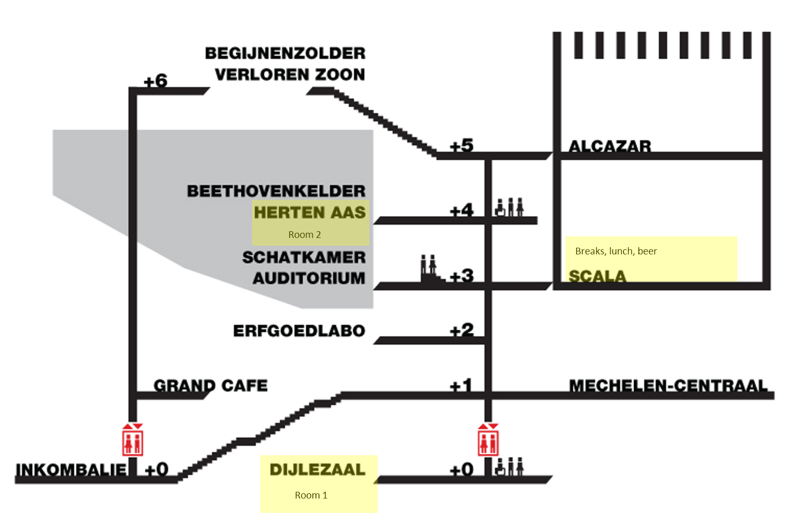

A conference by AZUG, the Belgium Microsoft Azure User Group
Saturday December 3, 2016
About CloudBrew
CloudBrew started in 2013 as a small-scale event focused on cloud technologies and Microsoft Azure.
-
Microsoft Azure
A full day of Microsoft Azure! We will have some local and international speakers who will share their knowledge and experience. Two tracks, 5 sessions each.
-
Beer sampling
The event takes place in a former brewery. We'll have a lunch buffet, and a session dedicated to sampling beer. But no worries! We'll have plenty of coffee and soda, too.
-
Small scale
We intentionally keep CloudBrew small-scale. This gives the event a more intimate feeling. It also allows us to keep the cost low, providing a day of learning that's really worth everyone's valuable time.
-
Community
Organized by AZUG, the Belgium Microsoft Azure User Group, CloudBrew originates from the community. Both you and our speakers are part of it. Ideal to network with peers!
Agenda
Malt&Mout
Speakers
-

Robin Vermeirsch
Technology Consultant for Xylos and passionate about identity solutions.
 @rovr_xylos
@rovr_xylos


-

Alex Mang
Regular speaker at community driven events. Focusing on cloud-computing topics. Trekking biker.
-

Peter Örneholm
IT-consultant at Active Solution in Stockholm with a passion for web, cloud and innovative ideas.


-

Tillmann Eitelberg
CEO, Data Platform MVP, Vice President PASS Deutschland e.V. | SSIS, SSRS, Spatial Data, Data Quality, Azure, IoT
-

Ameli Kirse
Biologist working with Next Generation Sequencing data.
-
Marius Zaharia
Passionate member of Azure community, blog writer, AZUG FR community manager, guitar player and singer.
-
Stephanie Locke
By day, a (not very) mild-mannered data scientist @ CensorNet. By night, a fiend for learning & MVP.
Location
CloudBrew takes place at Lamot, Van Beethovenstraat 8-10, 2800 Mechelen (Belgium)
Q-Park and Vinci parkings are nearby. Check Lamot's website for up-to-date parking and public transportation options.
Sponsors
CloudBrew would not be possible without our sponsors. Thanks!


Stay in touch
We have several evening sessions during the year as well. Join our newsletter and we'll keep you posted!